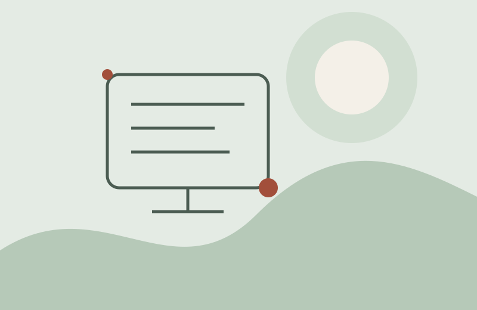

Kilograms to Pounds Converter: kg to lbs Formula, Chart and Calculator
Convert kilograms to pounds with the formula lb = kg × 2.20462, a quick chart and an instant converter — plus the reverse conversion.
Use the converter ↗THE TECHNOLOGY EDIT
Clear guides to useful AI tools, workflow automation and emerging technology. We focus on what a tool does, how to evaluate it and where its limits matter.
EXPLORE THE SECTION
Practical explainers, tools and analysis.

Convert kilograms to pounds with the formula lb = kg × 2.20462, a quick chart and an instant converter — plus the reverse conversion.
Use the converter ↗Learn how to convert Celsius to Fahrenheit with the simple formula, worked examples, a quick temperature chart and an instant converter — now with a Fahrenheit-to-Celsius converter too.
Use the converter ↗Understand autonomy, tool use, real-world examples, risks and how to choose the right AI workflow.
Read the guide ↗A grounded look at agent workflows, local models and multimodal systems, with forecasts distinguished from confirmed capabilities.
Read guide ↗Estimate potential time savings, monthly value, setup effort and payback using your own workflow assumptions.
Use the calculator ↗Calculate elapsed calendar days, complete weeks and Monday-to-Friday weekdays. Public holidays are not excluded.
Use the date calculator ↗Compare Argon, Carbon and Hydrogen workflows, vendor-reported benchmarks, free-tier availability, paid API rates and the December 1 price change.
Read analysis ↗